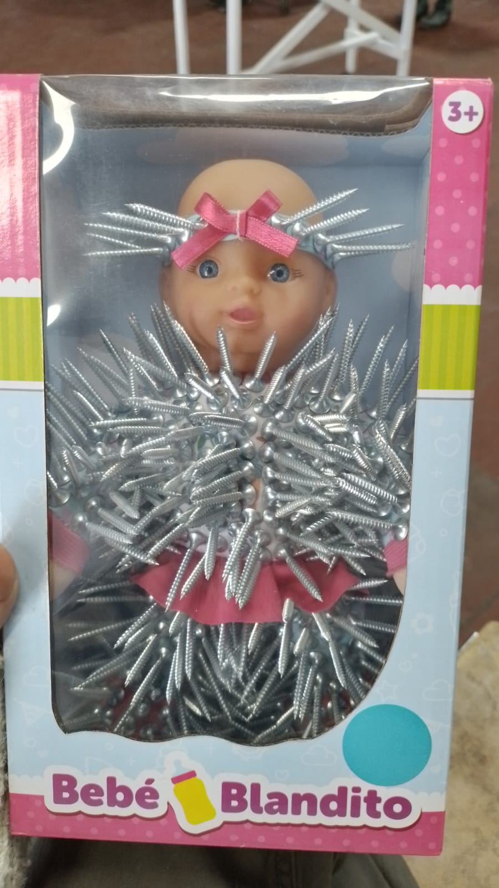
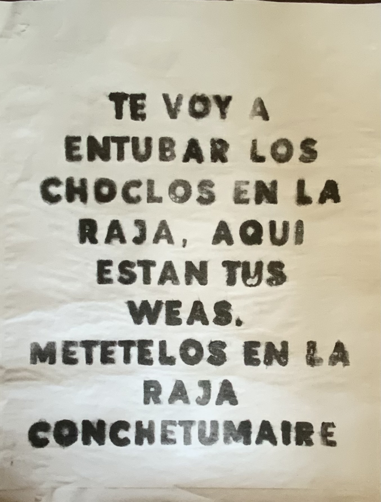
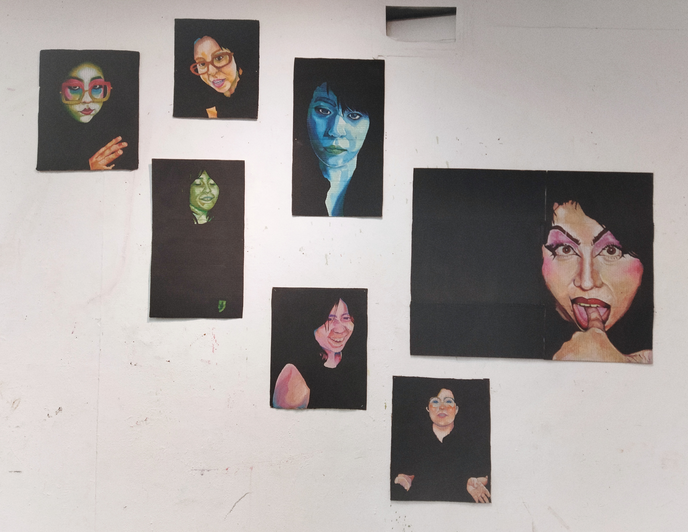
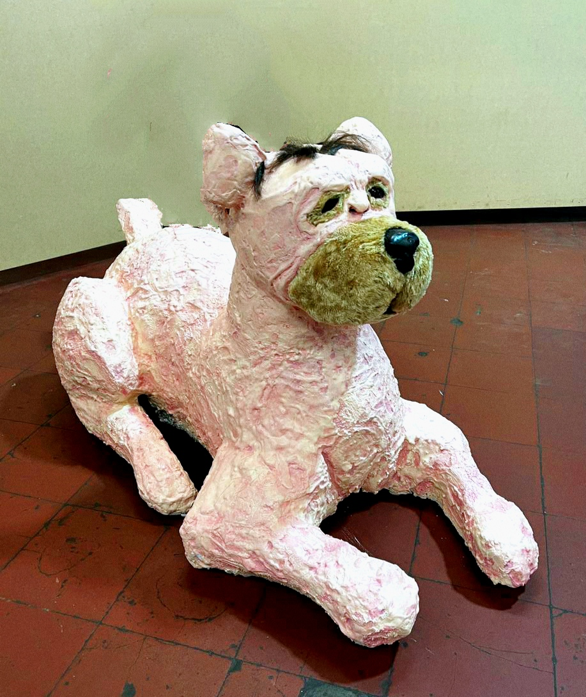
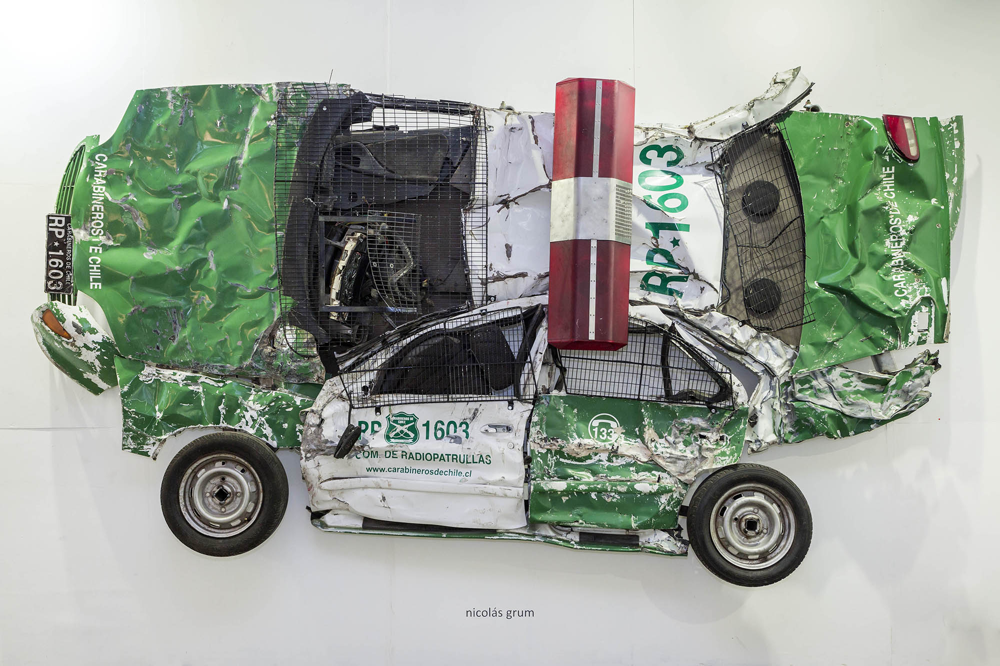
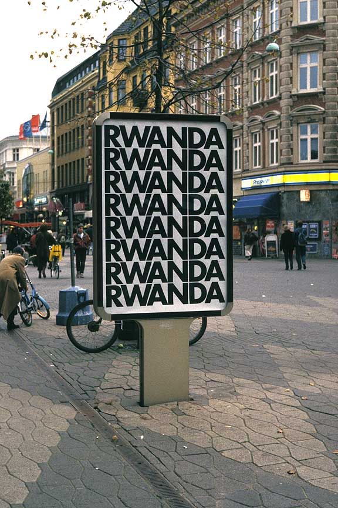
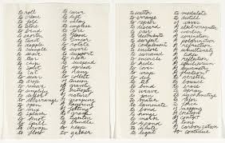

Artista de 22 años, estudiante de la Universidad Finis Terrae, crecí en un ambiente al cual se le complicaba entenderme. encontre refugio en los libros de historia y la internet a muy temprana edad haciendo que la dificultad para relacionarse conmigo creciera. me acostumbre a tener un espacio en mi cabeza fuera de lugar y quiero llevar parte de este espacio a mis obras

Bebe blandito. Juguete intervenido con tornillos que utiliza la ironía como principal enfoque.

Chile es sexo, no política. Xilografía sobre polera intervenida que explora la relación entre la cultura Pokémon y la dictadura de Pinochet.

Tía Nana. Aligrafía en papel imprenta basada en el viral chileno de la señora que roba choclos.

Yoismo. Serie de autorretratos hechos con pastel graso con soportes de cartón encontrado.

Niño-perro. Escultura hecha de espuma expansiva, yeso, masilla mágica y pelaje sintético.

Nicolás Grum
Obra: Orden y Patria II (2018)
Esta obra continúa una serie de trabajos relacionados con la institución de Carabineros de Chile, problematizando la idea de institución, poder y fuerza. En esta oportunidad, a través de un gesto casi infantil o cartoonesco, expone un carro de policía –Radio Patrulla– despojado de todo su carácter imponente e intimidante, convertido en un trozo de chatarra planchada.
Observación: Me interesa el gesto absurdo y caricaturesco de volver un auto de carabineros en esta imagen de animación, sin perder la crítica hacia la institución.

Alfredo Jaar
Obra: Ruanda, Ruanda (1994)
En agosto de 1994, Jaar viajó a Ruanda, donde presenció las consecuencias de uno de los conflictos étnicos más violentos de la historia reciente. Tras su regreso, inició el Proyecto Ruanda, que se desarrolló durante seis años en distintas formas. Esta obra fue presentada en espacios públicos mediante pantallas retroiluminadas con una estética comercial, instaladas en distintos puntos de la ciudad, donde los habitantes se encontraban con las imágenes en su vida cotidiana.
Observación: Me interesa la forma en que Alfredo realiza su metodología de investigación, antes de hacer una obra realiza una exhaustiva búsqueda de todas las aristas del problema que aborda, usando eventos de la vida real y adaptando la materialidad según se requiera.

Richard Serra
Obra: Verblist (1967)
Serra afirmó que “dibujar es un verbo”. En Verblist reunió una serie de acciones para relacionarse con el material, el lugar y el proceso. Esta obra muestra el origen de su práctica escultórica, vinculada al lenguaje, la acción y lo performativo, y su relación con la pintura de acción y prácticas conceptuales. La lista refleja su interés por los verbos como forma de pensamiento en la escultura.
Observación: En mis procesos de escultura suelo usar esta lista como un inicio a la hora de empezar un proyecto escultórico, me parece una excelente forma de visualizar como se comporta un material y que puedes lograr con el.